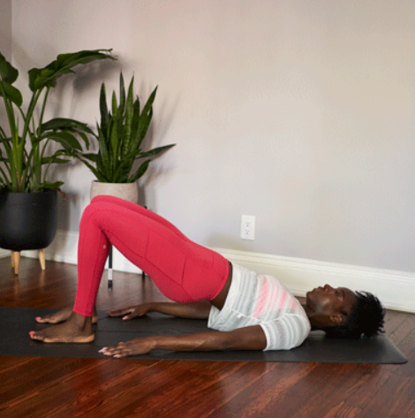
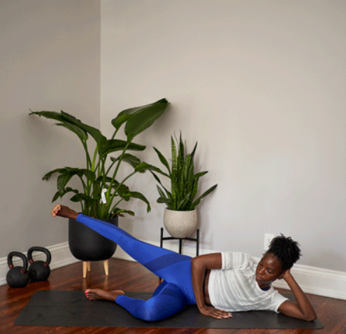
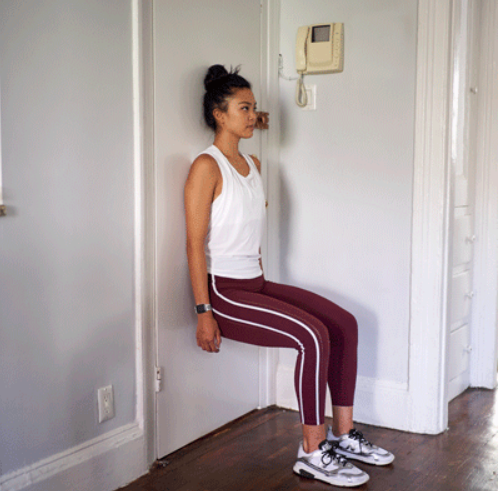

The Best 20-Minute At-Home Workout for Beginners
Starting a new exercise routine can be intimidating AF, especially if you're new to fitness. But don't worry! This 20-minute at-home workout for beginners is a great way to jump-start your #FitnessGoals. And the best part? You can do it all at home. Let's kick it!
20-minute-at-home workout for beginners
In a hurry to see some results? Here's a workout for newbies that takes only about 20 minutes.
1. Bridge
- The bridge will boost your booty all over. It works your gluteus maximus, medius, and minimus muscles. It'll also help get your heart rate up before you move on to more challenging exercises.
- 
How to do it:
- Lie flat on your back.
- Bend your knees and plant feet flat on the floor.
- Extend arms at your sides and press palms into the floor.
- Push your feet into the floor and raise your hips until your body forms a straight line from knees to shoulders.
- Squeeze glutes and hold for a few seconds.
- Return to the starting position.
- Do 3 sets of 10 reps.
- Pro tip:Place a folded towel under your neck for extra support. You can also use a yoga mat to make things a little more comfy.
2. Side-lying hip abduction
- This one is all in the hips. The movements will help loosen tight muscles and strengthen your sides.
- 
How to do it:
- Lie on your right side with your legs stacked. (You can bend your right leg for more support.)
- Lift left leg up, then lower it toward the floor.
- Repeat this motion.
- Switch sides.
- Shoot for 3 sets of 10 reps on each side.
- Pro tip:Add ankle weights or a resistance band if you want to kick it up a notch.
3. Wall squat
- You'll feel the burn in your abs, glutes, calves, and quads with this move. Wall squats can also help you learn to focus on your form and increase your stamina.
- 
How to do it:
- Press your back flat against a wall.
- Press your feet firmly into the floor, shoulder-width apart, about 2 feet in front of the wall.
- Bend your knees until they're at a 90-degree angle. Keep your back pressed into the wall.
- Hold this position for up to 1 minute at a time.
- Slowly return to the starting position.
- Pro tip:Try placing a stability ball behind your back. It can increase your range of motion while reducing your risk of injury.
How to build a workout that works for you
Finding your dream routine can take time. And that's OK! Fitness isn't one-size-fits-all. It's all about finding the right balance and tools that work for you. Here are some ways you can personalize your workouts.
1. Add weights
- Adding weights to your workout isn't just bomb for how your bod looks. Pumping iron can increase endorphins and boost self-esteem. Bonus: Research suggests that a steady strengthening routine can help you get a better night of shut-eye.
2. Pick up your muscle groups
- There are lots of perks of a full-body workout. But some folks see better results when they target one or two specific muscle groups at a time. This also gives your other muscles time to recover.
3. Join the resistance
- Resistance bands are designed with compound exercises in mind. That means they can help engage your stabilizing muscles and improve the overall quality of your workouts. They also get major brownie points for being so lightweight and portable.
4. Grab your gear
- You don't need to spend big bucks on a brand-new #FitLife wardrobe. You just need a solid pair of sneakers and some breathable, supportive clothing.